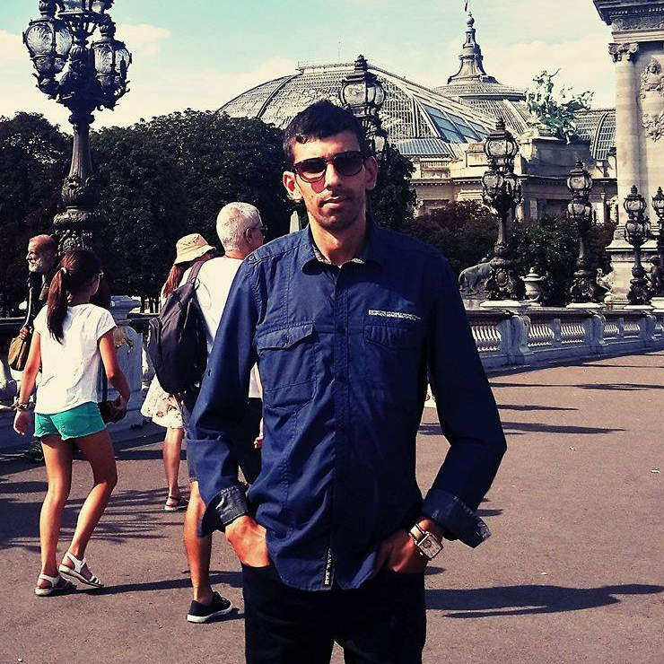

<div class="container">
	<div class="row">
        <div id="speaker-detail" class="col-lg-10 col-lg-offset-1">
            <div class="row">
            	<button title="Close (Esc)" type="button" class="mfp-close">×</button>
                
                <div class="col-md-5 col-lg-5 no-padding">
                    
                </div>
                    
                <div class="col-md-7 col-lg-7">
                    <h2>Amin<span>Zammouri</span></h2>
                    <p class="lead"><strong>Université Euro-Méditerranéenne de Fès</strong></p>
                    <ul class="social list-inline list-unstyled">
                        
                        <li><a href="https://www.linkedin.com/in/amin-zammouri-19b0a142/"><i class="fa fa-2x fa-linkedin-square"></i></a></li>
                    </ul>
                    
                    <div id="content">
                    	<p>docteur en philosophie et professeur Assistant en informatique à l’Université Euro-Méditerranéenne de Fès, expert en Intelligence Artificielle, interfaces Cerveau-Machine et en neuro-ingénierie</p>
                    </div>
                </div>
            
            </div>
        </div>
    </div>
</div>
